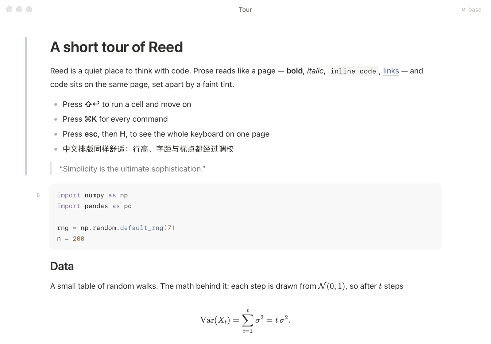
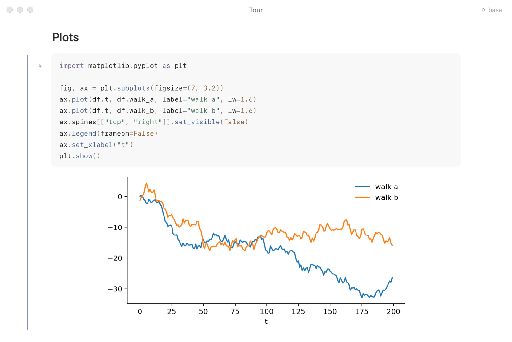

Reed
A quiet Jupyter notebook editor, made for macOS and nothing else.
A quiet Jupyter notebook editor, made for macOS and nothing else.

Reed gives your attention back to the content, as Typora does, and can run reactively, as marimo does; what it reads and writes is still plain .ipynb, and what it talks to is still the Jupyter kernels already on your machine.
“Who says the river is wide? A single reed will cross it.”
— Book of Songs
A reed is enough. A reed cut to a point was the first pen, and Pascal called man a thinking reed. The icon is that one reed.
Cells have no frames. Code is set apart only by a very faint tint, output lands directly on the page, and figures and tables sit in the middle of the column, like a typeset document.
Which cell you are in is told by one thin line in the left margin, and that line travels: moving, adding, removing, folding — all of it glides into place on the same curve and in the same 0.2 s, with no bounce. The line beside this paragraph is that line.
At rest the page has no buttons. The command palette, ⌘K, is the way in to everything: every command, searched by name; and the same panel chooses a kernel, goes to a heading, opens a notebook, lists the kernel’s variables and holds the settings. It is the only panel — there is no sidebar.
The pointer does very little, and two things appear only when it comes to rest where they belong: a copy button beside a cell or a piece of its output, and a small mark in the gap between two cells that adds one.
This page answers to the same keys: opens its palette, and J and K walk the line down and up.

A Markdown cell has no frame; it reads like body text on paper. Click and you are editing in place, headings and bold keeping their rendered size and weight; leave, and it is rendered again. ↑ on a cell’s first line and ↓ on its last walk straight into the next cell, so the notebook reads as one document.
While you type, the title, the kernel status and the run counts fade out, and they come back when the pointer moves. Focus mode keeps only the current cell at full strength; typewriter mode holds the line you are typing at a fixed height in the window.
Completion is quiet. Nothing pops up as you type; the rest of the likeliest name is shown, faintly, after the caret. Tab takes it, typing on ignores it, and ↩ is only ever a new line.
df = pd.read_csv("walks.csv")
df.describe()Output is streamed text, tracebacks, DataFrame tables, images at Retina sharpness, SVG, LaTeX, JSON, Plotly and Altair; ipywidgets are drawn natively. Any of it can be taken away as it is — a figure as the picture, a table as a table.

After a cell runs, the numbers of the cells that depend on it turn amber: their results are out of date. Turn on Reactive Execution and they rerun by themselves, in dependency order, as in marimo. Dependencies are worked out by Python itself, in the kernel, so scoping is never guessed wrong.
Registered kernelspecs are found automatically, and so are Python environments that have ipykernel: conda environments, a .venv beside the project, pyenv, uv. Environments without it are listed too; choose one and press ↩ to install it.
Download Reed-0.1.0-macos-arm64.zip, unzip it, and drag Reed into Applications. It needs a Mac with Apple silicon; this version has been built and used on macOS 27 only, and earlier systems have not been tried.
Reed is not notarised by Apple — that takes a paid developer account — so macOS stops it the first time. Go to System Settings → Privacy & Security and click “Open Anyway”, or run this in Terminal:
xattr -dr com.apple.quarantine /Applications/Reed.appIf you would rather not run a downloaded app, build it from source; it takes about half a minute.